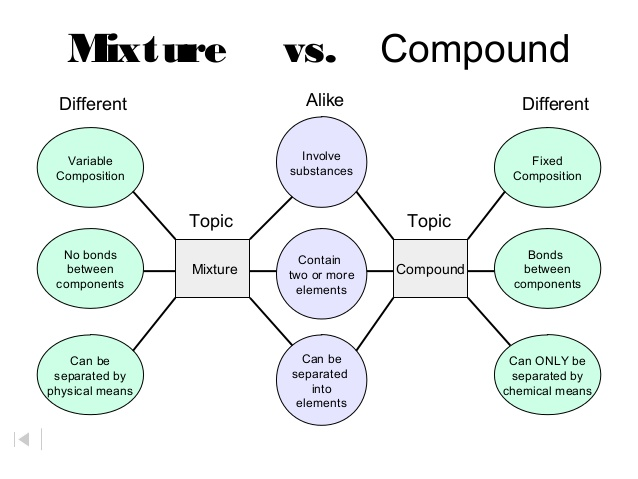

जब दो या दो से अधिक तत्वों के परमाणु रासायनिक रूप से एक निश्चित अनुपात में मिलकर एक यौगिक बनाते हैं, तो तत्वों के गुण बदल जाते हैं। जबकि जब दो या दो से अधिक पदार्थ अनिश्चित अनुपात में मिलकर रासायनिक रूप से नहीं मिलते हैं, तो वे एक मिश्रण बनाते हैं। इसलिए यौगिक और मिश्रण को निम्नलिखित तरीकों से अलग किया जा सकता है-
1. मिश्रण समांगी या विषमांगी हो सकता है, जबकि यौगिक हमेशा समांगी होता है।
2. मिश्रण के गुण व्यक्तिगत घटकों के गुणों के समान होते हैं, जबकि यौगिक के गुण घटकों से पूरी तरह अलग होते हैं।
3. मिश्रण के विभिन्न घटकों को भौतिक साधनों द्वारा आसानी से अलग किया जा सकता है, जबकि यौगिक के मामले में ऐसा संभव नहीं है।
